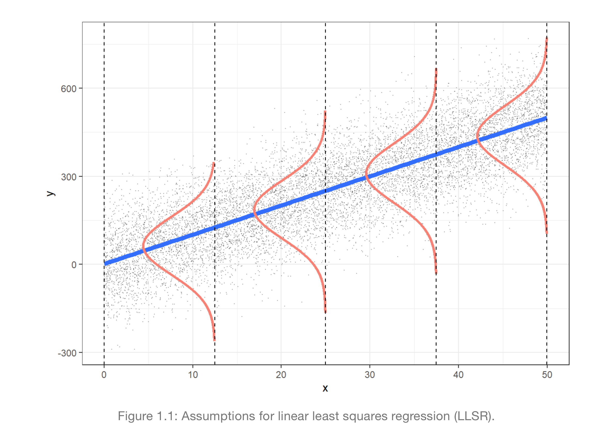
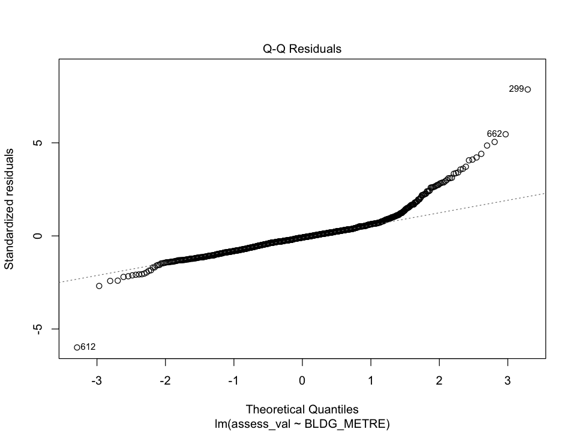
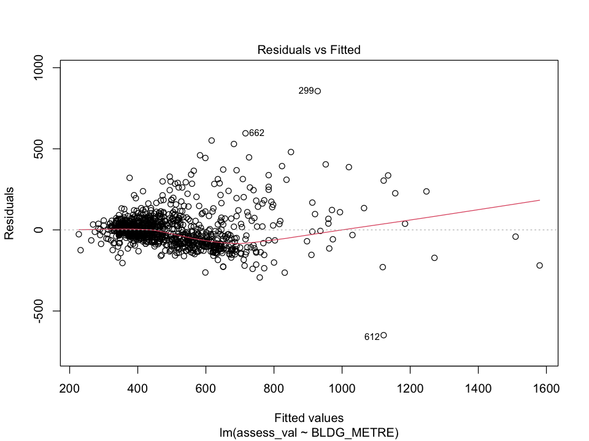

Regression I
Introduction
- Basic idea: fit a line to data
- Can help with:
- Estimation: how to estimate the true (but unknown) relation between the response and the input variables
- Inference: how to use the model to infer information about the unknown relation between variables
- Prediction: how to use the model to predict the value of the response for new observations
- Before starting, normally do some exploratory data analysis (EDA) to get a sense of the data
- find out size
- distribution of variables
- missing values/ outliers
- relationships between variables
Simple Linear Regression
- Simple linear regression: one response variable and one explanatory variable
Let \((X_i, Y_i)\) for \(i = 1, \dots, n\) random sample of size \(n\) from a population.
\[Y_i = \beta_0 + \beta_1 X_i + \epsilon_i\]
Where:
- \(Y\) is the response variable
- \(X\) is the explanatory/ input variable
- \(\epsilon_i \sim N(0, \sigma^2)\) and \(\epsilon_1, \dots, \epsilon_n\) are independent.
- It represents other factors not taken into account in the model

Image from the book: “Beyond Multiple Linear Regression”, from Paul Roback and Julie Legler
Assumptions:
- conditional expectation of \(Y\) is linearly related to \(X\) \[E(Y|X) = \beta_0 + \beta_1 X\]
- iid
- all random error \(\epsilon_i\) is normally distributed with mean 0 and variance \(\sigma^2\)
\[E(\epsilon | X) = 0 \\ and \\ Var(\epsilon | X) = \sigma^2\]
Best Line
- Line that minimizes the sum of squared errors (SSE) or distance between the line and the data points
\[SSE = \sum_{i=1}^n (Y_i - \hat{Y}_i)^2 = \sum_{i=1}^n (Y_i - \hat{\beta}_0 - \hat{\beta}_1 X_i)^2\] [[fact check the equation above]]
R: using lm()
# fit a linear model
lm(Y ~ X, data = data)
# plot linear line using ggplot2
ggplot(data, aes(x = X, y = Y)) +
geom_point() +
geom_smooth(method = "lm", se = FALSE)SLR with catagorical covariates
Turn categorical into dummy variables (numerical)
- e.g. X = Fireplace in a house, Y = Price of the house
- Make dummy variable: \(X_2 = 1\) if house has fireplace, \(X_2 = 0\) if house doesn’t have fireplace
- \(E(Y|X_2) = \beta_0+ \beta_2 X_2\)
Some cool thing:
- \(\beta_2 = E(Y|X_2 = 1) - E(Y|X_2 = 0) = \mu_1 - \mu_0\)
- SAME as null hypothesis for t-test
- \(\beta_0 = E(Y|X_2 = 0)\)
- \(\beta_2 = E(Y|X_2 = 1) - E(Y|X_2 = 0) = \mu_1 - \mu_0\)
Estimation with SLR
\[ Y_i = \beta_0 + \beta_1 X_i + \epsilon_i \]
- For Linear Regression, we are estimating:
- \(\beta_0\) and \(\beta_1\)
Uncertainty in Estimation
lm <- lm(Y ~ X, data = data) |>
tidy() |>
mutate_if(is.numeric, round, 3) # round to 3 decimal places
# Returns:
# term estimate std.error statistic p.value
# <chr> <dbl> <dbl> <dbl> <dbl>Standard Error
- If take LR for new samples, we will get different estimates
- Standard Error is the standard deviation of the sampling distribution of the estimate
- Methods to measure uncertainty in estimation:
- compute SE after taking multiple samples
- rarely take multiple samples, just take it theoretically (what
lmdoes), see third col above - can also bootstrap from sample to get distribution of estimates -> get standard error
i. Multiple Samples
- Take multiple samples and compute the variance of the estimates
ii. Theoretical Standard Error
- Assumption: conditional distribution of \(Y_i\) given \(X_i\) is normal with mean \(\beta_0 + \beta_1 X_i\) and variance \(\sigma^2\), the \(\epsilon_i\) term.
- Use t test with \(df=n-p\)
- n = sample size
- p = number of parameters in the model
- Used by
lmto get standard error - If conditional dist is normal => error term is normal => sampling distribution of \(\hat{\beta_1}\) is normal
- Or if the sample size is large enough, sampling distribution of \(\hat{\beta_1}\) is approximately normal (CLT)
iii. Bootstrap
Bootstrap Normal Theory
\[\beta \pm z_{\alpha/2} SE(\hat{\beta})\]
- SE = stdev of bootstrap distribution
Bootstrap Percentile Method
- basically take the 2.5th and 97.5th percentile of the bootstrap distribution (95% confidence interval)
\[\hat{b}_{\alpha/2} , \hat{b}_{1-\alpha/2}\]
Confidence Intervals
tidy(lm_s, conf.int = TRUE)- If 0 is in the confidence interval, then we can’t reject the null hypothesis (\(\beta_1 = 0\))
Hypothesis tests for SLR
Can do:
\(H_0: \beta_0 = 0\) vs \(H_a: \beta_0 \neq 0\)
- Usually not interesting
\(H_0: \beta_1 = 0\) vs \(H_a: \beta_1 \neq 0\)
- Answers: is there a linear relationship between \(X\) and \(Y\)?
Recall, test statistic under null hypothesis:
\[ t = \frac{\hat{\beta_1}}{SE(\hat{\beta_1})} \]
Which has a t-distribution with \(n-p\) degrees of freedom
Multiple Linear Regression
\[Y_i = \beta_0 + \beta_1 X_{i1} + \beta_2 X_{i2} + \dots + \beta_p X_{ip} + \epsilon_i\]
e.g. \[ Y_i = \beta_0 + \beta_1 height_i + \beta_2 weight_i + \epsilon_i \]
- Linear regression models the conditional expectation as linear combination of the predictors
\[ E(Y|X_1, X_2, \dots, X_p) = \beta_0 + \beta_1 X_1 + \beta_2 X_2 + \dots + \beta_p X_p \]
MLR in R
# visualize the relationship between variables
# using ggpairs from GGally package
ggpairs(data)
# fit the model
lm_s <- lm(Y ~ X1 + X2 + X3, data = data)Categorical variables in MLR
For 2 categories (e.g. Fireplace exits or not) we only need 1 dummy variable
- corresponding to 0 or 1
For 3 categories (e.g. old, modern, new) we need 2 dummy variables
- M corresponds to 1 if house is modern, 0 otherwise
- N corresponds to 1 if house is new, 0 otherwise
For \(k\) categories, we need \(k-1\) dummy variables
lm(Y ~ cat_var, data = data) # cat_var is a categorical variableInteraction Terms
- Normally when you have categorical and continuous variables, the linear model will:
- fit different intercepts for each category
- fit the same slope for each category (simpler)*
- Interaction terms allow us to fit different slopes for each category
*Occam’s razor: if can explain with simpler model, do so
e.g.
\[Y_i = \beta_0 + \beta_1 X_i + \beta_2 Z_i + (\beta_3 X_i Z_i) + \epsilon_i\]
- \(X_i\) is a continuous variable
- \(Z_i\) is a categorical variable
- \(\beta_3\) is the interaction term
fit <- lm(score ~ age*sex, data = dat)
tidy(fit) |> mutate_if(is.numeric, round, 3)
# Returns columns:(intercept), age, sexmale, age:sexmaleIntercept: average teaching score of female instructors of zero ageage: slope for female instructors. Increase in age by 1 year will increase teaching score byagefor female instructorssexmale: holding age constant, the difference in teaching score between male and femaleage:sexmaleis the offset slope. Increase in age by one year is associated with the increase in teaching score ofage + age:sexmalefor male instructors.
Goodness of Fit
- Is this better than nothing/ null model (only intercept)?
- In other words is \(E(Y|X)\) better than \(E(Y)\)?
Sum of Squares Decomposition
- Total sum of squares (TSS):
- \(TSS = \sum (y_i - \bar{y})^2\)
- Sum of squares from the null (intercept only) model
- Explained sum of squares (ESS):
- \(ESS = \sum (\hat{y}_i - \bar{y})^2\)
- measures how mich it is explained by the model
- better model = larger ESS
- Residual sum of squares (RSS):
- \(RSS = \sum (y_i - \hat{y}_i)^2\)
- RSS == SSE (sum of squared errors) == n * MSE (mean squared error)
- Estimated parameters minimizes RSS (objective function)
- Where:
- \(y_i\) observed ith value of y
- \(\hat{y}_i\) predicted value of y with a model (of sample)
- \(\bar{y}_i\) mean of y
If using linear regression using least squares:
\[ TSS = ESS + RSS \]
Recall: Residuals is the difference between the observed value and the predicted value. \(r_i = y_i - \hat{y}_i\)
Coefficient of Determination
\[ R^2 = \frac{ESS}{TSS} = 1 - \frac{RSS}{TSS} \]
- \(R^2\) is the proportion of variance explained by the model
- Tells us how well the regression model explains the variation in the data
- \(R^2\) is between -inf and 1 (1 being perfect fit)
- generally between 0 and 1 since expect TSS > RSS
- ONLY IF the model has an intercept and is estimated by LS
- only less than 0 if model is worse than null model
- generally between 0 and 1 since expect TSS > RSS
glance(fit)Limitations of \(R^2\)
- \(R^2\) increases with number of predictors
- \(R^2\) will never decrease when adding predictors
- Computed based on “in-sample” predictions
- We do not know how well the model will perform on new data
- Basically only on train data, dunno performance on test data
- Is it useful?
- Yes, to compare size of residuals of fitted model to null model
- Cannot be used to test any hypothesis since its distribution is unknown
\(R^2\) on Test Data
- Is no longer coefficient of determination
- Measures correlation between the true and predicted values
- \(R^2 = Cor(Y, \hat{Y})^2\) if \(\hat{Y}\) is a prediction obtained from a LR with an intercept estimated by LS.
- This is ued to assess the prediction performance of a model
Better model: F-test
- Compare two models
- \(reduced\): intercept + some predictors
- \(full\): intercept + predictors
- Is the full model better than the reduced model? Simultaneously testing if many parameters are 0
- F-test is a global test
- tests if all parameters are 0
- if F-test is significant, then at least one parameter is not 0
\[F \propto \frac{(RSS_{reduced} - RSS_{full}) / k}{RSS_{full} / (n - p)}\]
- params:
- k = number of parameters tested (difference between models)
- p = number of predictors in the full model (s + 1)
lm_red <- lm(score~1, data=dat) # intercept only
lm_full <- lm(score~ age + sex, data=dat)
anova(lm_red,lm_full)
# F-test tests H0: coef_age = coef_sex = 0
glance(lm_full)
# also includes F-statistic in "statistic" column + p-value
# compares it to null model (intercept only)- F-test can test multiple parameters at once
- e.g. \(\beta_1 = \beta_2 = \beta_3 = 0\)
- For one parameter, F-test is equivalent to t-test
- e.g. \(\beta_1 = 0\)
- For one parameter, \(t^2 = F\)
- where t is the t-statistic and F is the F-statistic
Interpretation
- if F-statistic is large (F > 1), then the full model is better than the reduced model
- if F-statistic is small (F < 1), then the full model is not better than the reduced model
F-test vs \(R^2\)
- Both depend on RSS and TSS, there is a formula to convert between them
- F-test has a known F-distribution (under certain assumptions) so we can use it to make probabilistic statements
Model Evaluation
Inference vs Prediction
- What is your goal?
- Inference: understand the relationship between the response and the predictors
- Prediction: predict the response for future observations
Evaluation Metrics
- Mean squared error (MSE): average squared error on new data
- \(MSE = \frac{1}{n} \sum_{i=1}^n (y_i - \hat{y}_i)^2\)
- Train MSE: MSE on training data
- Test MSE: MSE on test data
- Residual Sum of Squares (RSS): n * MSE
- \(\sum_{i=1}^n (y_i - \hat{y}_i)^2\)
- small is good
- residuals are measured in training data
- Residual Standard Error (RSE): estimates the standard deviation of the residuals
- \(\sqrt{\frac{1}{n-p} RSS}\)
- p = number of parameters in the model
- Based on training data to evaluate fit of the model (small is good)
- \(\sqrt{\frac{1}{n-p} RSS}\)
- Coefficient of Determination (\(R^2\)):
- \(R^2 = \frac{ESS}{TSS} = 1 - \frac{RSS}{TSS}\)
- *See
Interaction Terms > Coefficient of Determinationfor more info
Variable Selection
Inference
- Use F-test to test to compare and test nested models
anova(lm_red,lm_full)
- t-test to test contribution of individual predictors
tidy(lm_full, conf.int = TRUE)
- F-test is equivalent to t-test when there is only one predictor
- \(R^2\) is the proportion of variance explained by the model
- \(R^2\) increases with number of predictors (RSS decreases)
- Adjusted \(R^2\) penalizes for number of predictors
- Adjusted \(R^2\) increases only if the new predictor improves the model more than expected by chance
- Adjusted \(R^2\) decreases if the new predictor does not improve the model more than expected by chance \[R^2_{adj} = 1 - \frac{RSS/(n-p)}{TSS/(n-1)}\]
- Cam be used to compare models with different number of parameters/ predictors
Nested models: one model is a special case of the other
- e.g.
lm(y ~ x1 + x2)is nested inlm(y ~ x1 + x2 + x3)
Prediction
Test MSE
- Average squared error on new data
- Selection criteria:
- The Mallows Cp
- Akaike information criterion (AIC)
- Bayesian information criterion (BIC)
- These add different penalties to the training RSS to adjust for the fact that the training error tends to underestimate the test error
Automated proedure for feature selection
- Forward selection
- Start with null model
- Add predictors one at a time (select the best feats at that number of feats)
- Stop when no more predictors improve the model
leaps::regsubsets
- Backward selection: start with full model and remove predictors one at a time
- Hybrid: after adding a predictor, check if any predictors can be removed
dat_forward <- regsubsets(
assess_val ~ age + FIREPLACE + GARAGE + BASEMENT,
data = dat_s,
nvmax = 5, # max number of feats
method = "forward", # backward, exhaustive, etc.
)
# view
fws_summary <- summary(dat_forward)
# will have rsq, adj r2, rss, cp, bic, etc.Regularization
- Offers an alternative to the above methods
- e.g. Ridge, Lasso, Elastic Net
Prediction Intervals vs Confidence Intervals for Prediction
- Conditional expectation of predictor \(Y\) given \(X\): \[E(Y|X)\]
- Assumes linear form of ^
Terms:
- \(\hat{y}_i\) is the predicted value of the LR model (sample)
- \(E(Y_i|X_i)\) is the conditional expectation of \(Y\) given \(X_i\)
- or the average value of \(Y_i\) for a given \(X_i\)
- or LR model of population
With our model \(\hat{y}\) we can predict:
- \(E(Y|X_0)\)
- \(Y_i\) (Actual value of \(Y\) for \(X_i\))
- A lot harder to predict (individual prediction)
2 types of intervals:
- Confidence intervals for prediction (CIP)
- Prediction intervals (PI)
| CIP | PI |
|---|---|
| Uncertainty of the mean of the prediction | Uncertainty of the individual prediction |
| Uncertainty of \(E(Y_i\|X_i)\) | Uncertainty of \(Y_i\) |
| Error from estimation of \(\beta\) | Error from estimation of \(\beta\) and \(\epsilon\) |
| Smaller than PI | Wider than CIP |
| Centered around \(\hat{y}_i\) | Centered around \(\hat{y}_i\) |
Confidence Intervals for Prediction (CIP)
- We are interested in the mean of the prediction, not the individual prediction \[E(Y_i|X_i)\]
- Uncertainty only comes from the estimation (1 source of uncertainty)
The model: \[\hat{Y}_i = \hat{\beta}_0 + \hat{\beta}_1 X_i\]
approximates, with uncertainty, the conditional expectation: \[E(Y_i|X_i) = \beta_0 + \beta_1 x_i\]
i.e. Estimated coeffs (\(\hat{\beta}_0\) and \(\hat{\beta}_1\)) are estimates of true population coeffs (\(\beta_0\) and \(\beta_1\))
- 95% CIP is a range where we have 95% confidence that it contains the average value of \(Y_i\) for a given \(X_i\)
- smaller CIP means smaller confidence interval => less confidence it contains the true values
CIP in R
model_sample <- lm(y ~ x, data = data_sample)
data_sample |>
select(x, y) |>
cbind(
predict(
model_sample,
interval = "confidence",
level = 0.95, # 95% CIP is default
se.fit=TRUE # standard error of the fit,
)$fit
)
# or
predict(
model_sample,
interval = "confidence",
newdata = tibble(x1 = 1, x2 = 2),
)Prediction Intervals (PI)
- We are interested in the individual prediction: \(Y_i\)
- Wider than CIP
The model: \[\hat{Y}_i = \hat{\beta}_0 + \hat{\beta}_1 X_i + \epsilon_i\] approximates, with uncertainty, an actual observation \(Y_i\).
Uncertainty comes from 2 sources:
- Estimation of the coeffs (\(\hat{\beta}_0\) and \(\hat{\beta}_1\))
- Variability of the error term \(\epsilon_i\)
- Actual observation \(Y_i\) differs from the average (population) by \(\epsilon_i\)
95% PI is a range where we have 95% confidence that it contains the actual value of \(Y_i\) for a given \(X_i\)
PI in R
data_sample |>
select(x, y) |>
cbind(
predict(
model_sample,
interval = "prediction", # change from "confidence"
level = 0.95, # 95% CIP is default
se.fit=TRUE # standard error of the fit
)$fit
)Potential Problems in LR
Linearity
Linearity in regression != linearity in math
Linearity in regression means that the model is linear in the parameters
Examples of linear regression models:
- $ y = _0 + _1 x_1 + _2 x_2 + _3 x_3 $
- $ y = _0 + _1 x_1 + _2 x_2 +_3 x_1^2 + _4 x_1 x_2$
- $ y = _0 + _1 x_1 + _2 e^{x_1} + _3 (x_2)$
Non-linear examples:
- $ y = _0 + _1 x_1 + _2 x_1^{_3} $
Normality of the Error term
- LS estimation do not depend on any normality assumption
- But if small sample size, normality assumption is needed for inference (since CLT does not apply)
- OLS (Ordinary Least Squares) do not require assumptions of normality. BUT we need to assume it in order to do inference (e.g. CIP, PI, hypothesis testing).
Q-Q plot
- Q-Q plot is a graphical method for assessing whether or not a data set follows a given distribution such as normal distribution
- Points in the Q-Q plot follow a straight line if the data are distributed normally
model <- lm(y ~ x, data = data_sample)
plot(model, which = 2) # which = 2 for Q-Q plot
Equal Variance
- We assumed that \(\epsilon_i\) are iid with mean 0 and variance \(\sigma^2\)
- Estimated using RSE (residual standard error)
- How to check this assumption?
- Plot residuals vs fitted values
- Need to see evenly spread points around 0
- Do not want to see funnel shape
- Plot residuals vs fitted values
- heteroscedasticity: variance of residuals is not constant
- homoscedasticity: variance of residuals is constant
plot(model, which = 1) # which = 1 for residuals vs fitted values
Multicollinearity
- Some of the explanatory variables are linearly related
- When this happens, the LS are very “unstable”
- contribution of each variable to the model is hard to assess
- can inflate the standard errors of the coefficients
Diagnosing Multicollinearity
- Correlation matrix
- Variance Inflation Factor (VIF)
- only works for linear models with > 1 explanatory variables
- VIF of \(x_j\) is \(VIF_j = \frac{1}{1-R_j^2}\)
- \(R_j^2\) is the \(R^2\) from the regression of \(x_j\) on all other explanatory variables
- How much of the observed variation of \(X_j\) is explained by the other explanatory variables
- If \(VIF_j >> 1\), then multicollinearity is a problem, remove \(x_j\) from the model
- Ridge deals with multicollinearity
- shrinks the coefficients of correlated variables towards each other
Cofounding Factors
Cofounding factors are variables, not in model, that are related to both the response and the explanatory variables
Confounding refers to a situation in which a variable, not included in the model, is related with both the response and at least one covariate in the model.
e.g. Job hunting, create a LR model to predict salaries based on programming languages
- Cofounding factor: years of experience, education level, etc.
Maximum Likelihood Estimation (MLE)
Example case
- Want to use LR to predict a binary outcome (e.g. whether a person will buy a product or not)
- Linear model will predict the “probability” of buying a product
- BUT it will predict values outside of the [0, 1] range
- It also violates:
- the assumption of normality (residuals are not normally distributed)
- equal variance (qq plot shows that residuals are not equal).
Solution: MLE (Maximum Likelihood Estimation)
- Using MLE and assume Bernoulli distribution for \(Y_i\), we can predict probabolities between 0 and 1.
\[ Y \sim Bernoulli(p) \] \[ Bernoulli(p) = p^y (1-p)^{1-y} \]
\[ E(Y) = p \]
Logistic Regression
Logit function
- Logit function is the inverse of the logistic function
- Properties:
- Range: \((-\infty, \infty)\)
- Monotonic: always increasing or always decreasing
- Differentiable: can be differentiated
\[ logit(p) = log(\frac{p}{1-p}) = \beta_0 + \beta_1 x_1 + ... + \beta_p x_p \]
\[ p_i = \frac{e^{\beta_0 + \beta_1 x_1 + ... + \beta_p x_p}}{1 + e^{\beta_0 + \beta_1 x_1 + ... + \beta_p x_p}} = \frac{1}{1 + e^{-(\beta_0 + \beta_1 x_1 + ... + \beta_p x_p)}} \]
Terminology
- Probability of success \[p = \frac{Odds}{1 + Odds}\]
- Odds of success: \[\frac{p}{1-p}\]
Logistic Regression in R
logistic_model <- glm(as.factor(y) ~ x1 + x2 + x3,
data = data,
family = binomial # use binomial distribution
)
# default is to predict the log odds of success
predict(logistic_model) # type = "link"
# to predict the odds of success
predict(logistic_model, type = "response")Interpretation
- Intercept: log odds of success when all predictors are 0
- Coefficients: log odds ratio of success for a 1 unit increase in the predictor
To get the odds ratio, we need to exponentiate the coefficients.
# returns the exp(log(odds ratio)) = odds ratio
tidy(logistic_model, exponentiate = TRUE)example:
- if \(\beta_1 = 0.4\), then the odds ratio is \(e^{0.4} = 1.49\).
- This means that for a 1 unit increase in \(x_1\), it is more likely to be a success by a factor of 1.49.
- Cannot say anything about probability of success increasing as \(x_1\) increases.
Inference of Logistic Regression
- We can determine whether a regressor is statistically associated with the logarithm of the response’s odds through hypothesis testing for \(\beta_i\).
- i.e. To determine whether a coefficient is significant
- Do the Walad Statistics test \[ z_i = \frac{\hat{\beta_i}}{SE(\hat{\beta_i})} \]
- \(H_0\): \(\beta_i = 0\)
- \(H_a\): \(\beta_i \neq 0\)
tidy(logistic_model, conf.int = TRUE)
# then check the p-value to see if the coefficient is significant